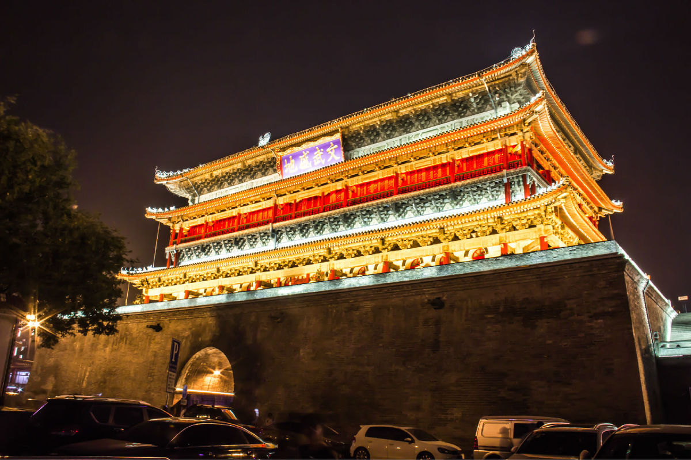

西安行程

西安行程 (不僅限於此次元旦節，後續時間也可)
出發日期：12-30 下午
回程日期： 1-2 下午或晚上
1.機票: 成人
| 航空公司 | 機場 | 時間 | 票價 | 備註 |
|---|---|---|---|---|
中国南方航空CZ9401(共享)中型机 325 |
首都机场T2-咸阳机场T3 |
17:05-19:15 |
¥2280(6.2折) |
|
中国南方航空CZ9402(共享)中型机321 |
首都机场T2-咸阳机场T3 |
18:45-20:55 |
¥2280(6.2折) |
|
中国南方航空CZ9177(共享)中型机320 |
首都机场T2-咸阳机场T3 |
21:05-23:20 |
¥2280(6.2折) |
|
华夏航空G54031(共享)中型机 32A |
首都机场T3-咸阳机场T2 |
20:25-22:40 |
¥2308(6.2折) |
機票預計花費： ¥2400
2.酒店：
| 名稱 | 地址 | 聯繫電話 | 入住一晚價格 | 入住夜數 | 總計 |
|---|---|---|---|---|---|
西安柠檬酒店（南门店） |
同名稱 |
电话029-85200745-白天联系 |
¥298-¥706 |
2 |
¥596-¥1412 |
西安東舍酒店（钟鼓楼店） |
同名稱 |
电话029-89625555-60086,0086-029-89625555-66666 |
¥611-¥1654 |
2 |
¥1222-¥3308 |
钟楼天成酒店（钟鼓楼回民街地铁站中心店） |
同名稱 |
电话029-87513333 |
¥185-¥329 |
2 |
¥370-¥658 |
其他的不一一列舉了，這些價格也是隨時在變化
3.玩樂：
到達機場后乘坐機場線到達 东大街大差市選擇酒店入住，休息一晚
第一天
陕西博物馆—钟楼、鼓楼—回民街
第一站：钟楼
交通工具：
大差市站坐710路公交车到翠华路（即陕西博物馆），用时30分钟票价1.5元
开放时间：每周二至周日；周一全天闭馆整修（国家法定节假日除外）。
参观时间：
冬季（11月15日至次年3月15日）9：00—17：30（16：00停止发票）
夏季（03月16日至11月14日） 8：30—18：00（16：30停止发票）
交通：5、19、24、26、 27、30、34、400、401、521、527、701、710、游6、游8（610路）路公交车均可到达，翠华路（即陕西博物馆）下车即到。
第一站：鼓楼
从大差市坐车只有二站地在钟楼下走往前走就能看到
门票分别是27元/人，联票是40元/人，敲钟或鼓另收5元。
开放时间：（4月1日—10月31日）8：00—22：00
（11月0日—次年3月31日）8：00—17：30
交通：钟楼位于西安城墙内最中心的位置，经过此地的公车众多。4、6、7、8、11、12、15、16、26、29、32、35、36、37、43、45、46、118、201、203、205、206、208、214、215、216、218、221、222、229、235、239、251、300、302、502、600、K600、603、604、K605、606、608、609、611、612、612区间、K618、K630、706、游7、游8（610）路公交车均可到达，钟楼下车即到。
第三站： 回民街
回民街是西安回族的聚集区，是由多条道路组成的，不是一条特定的道路。主要由北院门，化觉巷，西羊市，大皮院四条街道组成，而其中最重要的就是北院门这条街了。
吃貨館：
1、贾三灌汤包子馆
2、定家小酥肉 每份13元
3、盛志望麻酱酿皮铺 3元/一碗
4、东南亚甑糕王 6元/份
5、刘氏烧鸡
5、樊记腊汁肉店
玩耍完畢后，回到酒店，休息~~~
第二天
第一站大唐芙蓉园
注：
1、门票90元/人，学生票80元/人（很想问为什么不是半价）。
开放时间：9：00－21：00
全价票会送一张20元面值的兑换券和一张5元面值新天地的兑换券。
2、鱼食5元/袋.水还是比较贵的矿泉水3.5一瓶、冰红茶6元一瓶。
3、水幕电影是7：30开始，据说是大闹天宫。
4、观音壁那有免费烧香的，建议还是不要啦不然真的会让你破费一点银子。
5、送的那张20元的兑换券建议可以换一个小的玩具什么的，多花5块钱也挺值。
6、大唐芙蓉园离曲江海洋公园很近，时间充裕的话可以考虑一下。
7、 门票100元/人，学生票半价。
8、交通：5、19、21、22、24、27、30、34、41、44、212、224、237、320、400、 408、500、501、521、527、601、606、609、610、701、715、721、720、游4、游6、游8、游9、下车即到。提示：游客可从大唐芙蓉园站和大唐 芙蓉园西门站下车入园；大唐芙蓉园南门只供员工出入。
第二站 大雁塔公园
1、大雁塔喷泉广场就在大慈恩寺后来，可以在3点左右先游览大慈恩寺出来之后吃点东西再到广场上看看以陕西民俗文化为主题的雕塑，具有代表性的民俗风情的如：皮影、剪纸、泥塑、陕西八大怪、农村嫁娶、吹糖人、踩高跷、老城趣事及白鹿原系列等，颇有韵味。等到8：30看喷泉表演，即节约了时间也保留了体力。
2、音乐喷泉表演时间：
周一至周五每天12：00、20：00。
周六周日每天12：00、14：00、16：00、18：00、21：00。
冬季（11月到次年1月）一般没有表演，春节时例外。
3、晚间看喷泉表演时人通常都会非常多，特别是夏季的夜晚，最佳观景地点要提前占位；同时要小心人多拥挤。
4、出于安全，请勿进入喷泉广场的喷水区，尤其是在喷水时切莫走入其中。观看喷泉时，因为水量大、喷水高，注意保护相机等电子产品，以免被水雾打湿。
5、大慈恩寺门·大雁塔
门票：大慈恩寺25元，大雁塔登塔20元。
开放时间：8：00－17：00
6、交通：5、19、21、22、23、24、27、30、34、41、44、224、237、242、400、401、408、500、501、521、526、527、601、606、609、701、715、游4 、游6、游8、游9路公交车均可到达，大雁塔下车即到。
第三站 吃貨館
建国路有許多好吃的地方
推薦 鲍门宴 在建国路路口的胡同里，对面是人人居
他们家招牌是碳烤生蚝（10元/只）和烤金针茹（1元/串）（或是锡纸金针菇），前二天去都没有吃到第三天因为要回北京所以特地早点去吃。相比较之下还是比较喜欢吃他们家的烤扇贝（6元）、烤金针茹、烤韭菜、烤茄子、烤蒜头等等。
第三天 临潼一日游 华清池—骊山森林公园—兵马俑
參考路線： 打车到火车站坐游5（306路）公交车，就在火车站左边邮政快捷酒店门口那。坐车到华清池票价7元/人，行驶了45分钟到达。
第一站 华清池
门票：70元/张，学生票35元/张。讲解20元。
开放时间：8：00-16：00 交通：在火车站坐游5（306路）直接到景区门口
提示：里面有好多卖玉石的，不说真假就说品像也不会特别好。
第二站 骊山森林公园
索道：上行35元/位，下行30元/位。
门票：45元/位，学生票22.5元/位。
第三站 世界第八大奇迹—兵马俑
一号坑最大，坑深5米，面积14260平方米，坑内有6000余陶人陶马，井然有序地排列成环形方阵。坑东端有三列横排武士俑，手执弓弩类远射兵器，似为前锋部队，其后是6000铠甲俑组成的主体部队，手执矛、戈戟等长兵器，同35乘驷马战车在11个过洞里排列成38路纵队。南北两翼的后卫部队。这一队伍整肃，气势雄伟的地下军阵，是秦始皇当年横扫六合的百万雄师的艺术再现。
二号兵马俑坑平面呈曲尺形，面积6000平方米，是一坐西朝东，由骑兵、步兵、弩兵和战车混合编组的大型军阵。大致可分为弩兵俑方阵，驷马战车方阵，车步、骑兵俑混合长方阵，骑兵俑方阵四个相对独立的单元。共有陶俑陶马1300余件，战车80多辆，并有大量金属兵器。
三号兵马俑坑平面呈凹字形，面积约520平方米，它与一、二号坑是一个有机的整体，似为统师三军的指挥部，出土68个陶俑和4 马1 车。
游5在景区的指定停车站下车，向前走可以看到有租语音讲解器的。去展厅有二种方式，一是坐电瓶车可直接到达展厅门口，二是穿过一个民俗购物街步行20分钟.展区分为：铜车马厅、一至三号坑。我们去的时候铜车马是复制品，出土的文物去参加世博会啦，在那蹭听了一会讲解就去二号坑啦。如果可以还是避免周末去参观，人不是一般的多呀简直就是人挨人。二号坑没有挖掘也没怎么看懂怎么排列呀布阵什么的，就去了一号坑。看过之后不得不惊叹秦始皇你太牛啦，怎么想的呢，简直太壮观啦。游览完差不多也5点多啦，因为没买到回去的车票只能第二天再走。展区外有一家KFC，买了点吃的东西就去停车场坐车回市区的。
开放时间：3月16日—11月14日早上8：30—下午5：30
11月15日—3月15日早上8：30—下午5：00
票价：旺季（3月1日至当年11月底）门票90元/人，淡季（12月1日至次年2月底）门票65元/人。
学生凭学生证等有效证件可以买半票，65岁—70岁老人可以凭身份证买半票，军人、残疾人、70岁以上老人、未成年人可以凭有效证件免票进入。 线路可以安排：华清池—骊山森林公园—临潼博物馆—兵马俑。
游5（306路）火车站 - 康复路北口 - 胡家庙 - 王家坟 - 十里铺 - 止阳村- 临潼石榴园 - 新疗 - 西安事变厅 - 空疗路口 - 骊山索道 - 华清池 - 临潼博物馆 - 临潼东关 - 人民路 - 东六小区 - 八大奇迹馆 - 秦陵地宫 - 秦始皇陵 - 华乐学校 - 兵马俑 （国营的游5在邮政快捷酒店门口那，不用答理那些说几块钱直接送到的人，他们把人代到八大奇迹馆或是秦陵地宫等景点。）
放在最後的話
預計花費：
機票（雙程）：¥2400
酒店： 3夜 ¥1000~¥1500
飲食： 3天4夜 沒具體調查過，再怎麼也得¥1000里外吧
門票+交通： 100 + 100 + 30 + 80 +
100 + 150 + 300（交通）±200
= 960 ±200 = 760~960~1160
合計：
2400 + 1000~1500 + (760~960~1160) = ¥4160~4360~4560~4660~4860~5060
注：
因為是最後一天，會退完房，所以東西稍微多一點，而主要玩樂在最後一天會多謝，所以建議背上一個小包即可。早上早一點起來，回程機票可以選擇晚上晚一點，或者乾脆第二天早上，最後一晚找一個稍微便宜點的將就一晚，建議第二天回程，上午請假不上班即可，這樣會玩得更開心些。

微信打賞

支付寶打賞